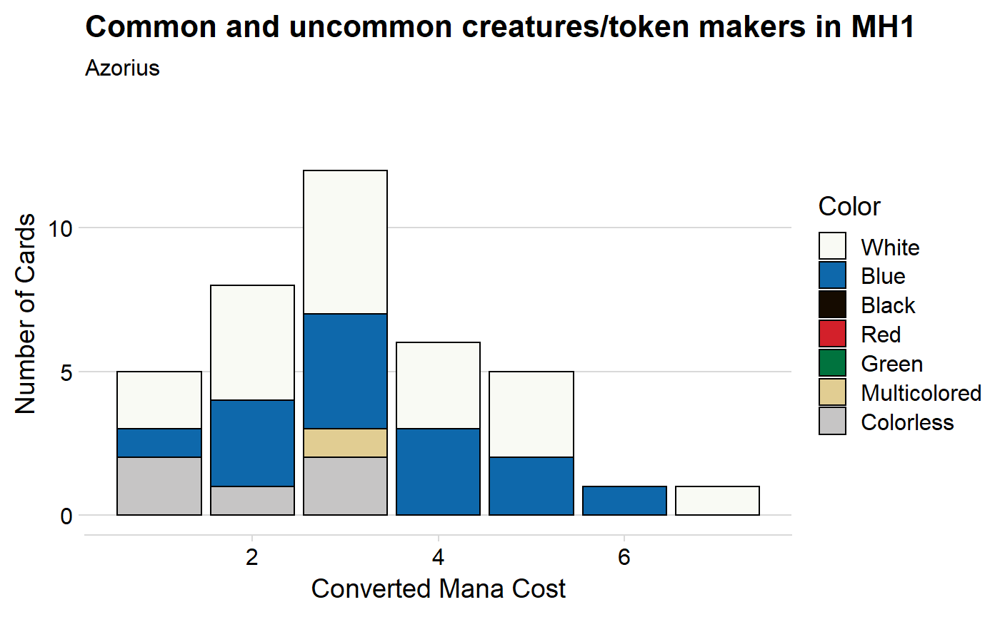

library(scryr)
library(tidyverse)
# dev version needed for themes (as of 2019-06-23)
# devtools::install_github("wilkelab/cowplot")
library(cowplot)
library(gganimate)Let’s use scry_cards and label_guilds to explore the mana curves of each of the draft archetypes in Modern Horizons. First, let’s find all of the common and uncommon cards that either are creatures or make tokens.
# Card Search API syntax guide at https://scryfall.com/docs/syntax
creatures <- scry_cards("t:creature s:mh1 r<=u")
token_makers <- scry_cards("o:token -t:creature s:mh1 r<=u -'generous gift'")
cards <- bind_rows(creatures, token_makers)
cards %>%
select(name, mana_cost, cmc, colors) %>%
head()
#> # A tibble: 6 x 4
#> name mana_cost cmc colors
#> <chr> <chr> <dbl> <list>
#> 1 Abominable Treefolk {2}{G}{U} 4 <chr [2]>
#> 2 Alpine Guide {2}{R} 3 <chr [1]>
#> 3 Azra Smokeshaper {3}{B} 4 <chr [1]>
#> 4 Bellowing Elk {3}{G} 4 <chr [1]>
#> 5 Bladeback Sliver {1}{R} 2 <chr [1]>
#> 6 Blizzard Strix {4}{U} 5 <chr [1]>Now we can use label_guild to assign each card to the color pair(s) that can use it (we’re going to completely ignore the fact that some cards, like Throatseeker, are clearly better in some archetypes than others). By default, label_guild requires an exact match, so Alpine Guide would return NA. We can use inclusive = TRUE to instead get list("Boros", "Gruul", "Izzet", "Rakdos"). Since colors is a list column, we need to use purrr::map.
cards_with_guilds <- cards %>%
mutate(color_pair = map(colors,
label_guild,
inclusive = TRUE,
# so tidyr::unnest() will work well later
convert_to_list = TRUE))Let’s turn colors into something more human-readable
create_color_label <- function(color_code){
case_when(
length(color_code) == 0 ~ "Artifact",
length(color_code) > 1 ~ "Multicolored",
identical(color_code, "B") ~
"Black",
identical(color_code, "G") ~
"Green",
identical(color_code, "R") ~
"Red",
identical(color_code, "U") ~
"Blue",
identical(color_code, "W") ~
"White",
TRUE ~ NA_character_
)
}
cards_with_guilds <- mutate(cards_with_guilds,
colors = map_chr(colors, create_color_label),
# relevel for legend
colors = fct_relevel(colors, "White", "Blue",
"Black", "Red", "Green",
"Multicolored", "Artifact"))With tidyr::unnest(), we can replicate each card for each archetype it could belong to, making it easier to count by color pair.
cmc_count <- cards_with_guilds %>%
unnest(color_pair, .drop = FALSE) %>%
mutate(color_pair = unlist(color_pair)) %>%
count(cmc, colors, color_pair)Now we can visualize our data with gganimate
ggplot(cmc_count, aes(cmc, n, fill = colors)) +
# black borders so white fill shows up
geom_col(color = "black") +
transition_states(color_pair, transition_length = 2, state_length = 5) +
cowplot::theme_minimal_hgrid() +
labs(title = "Common and uncommon creatures/token makers in MH1",
subtitle = "{closest_state}",
x = "Converted Mana Cost",
y = "Number of Cards",
fill = "Color") +
scale_fill_manual(values = c(
"Artifact" = "#c6c5c5",
"Multicolored" = "#e1cd92",
"White" = "#f9faf4",
"Blue" = "#0e68ab",
"Black" = "#150b00",
"Green" = "#00733e",
"Red" = "#d3202a"
))